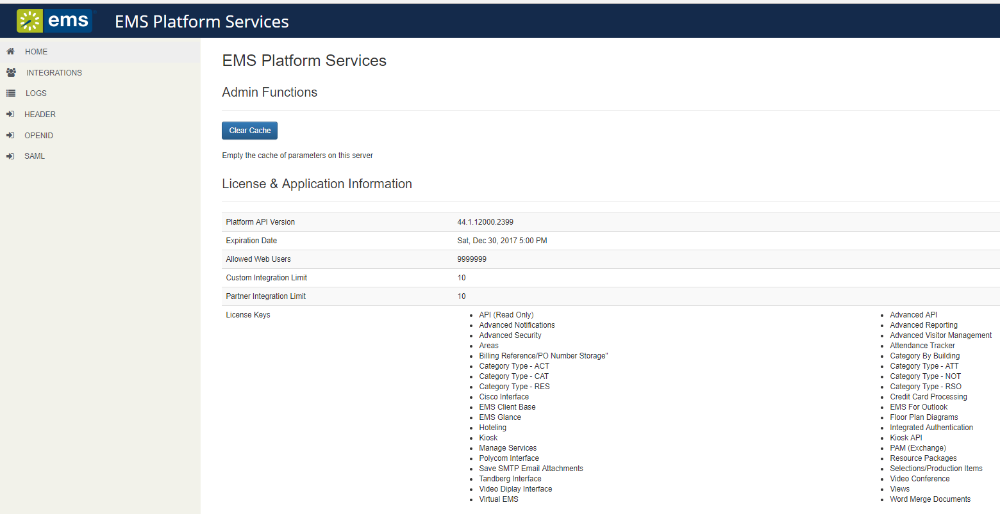
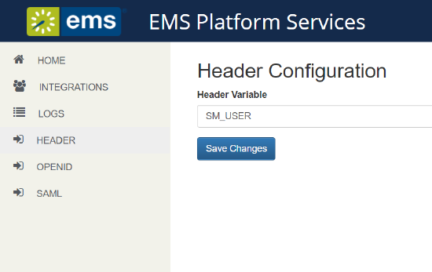
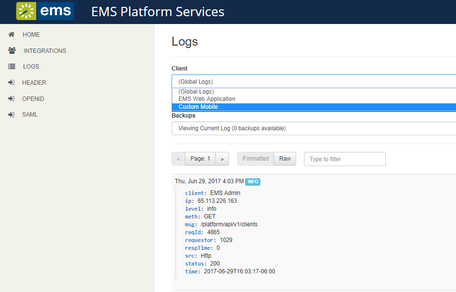

Configure Platform Services in the Admin Portal
To begin configuration of EMS Platform Services, navigate to the Platform Services URL (e.g., https://yourcompany.com/ems-platform-api/admin).
This topic provides information on the following:
Authentication Types
EMS supports two authentication types for the EMS Platform Services Admin Portal:
- EMS Native authentication—A web user with web admin security template credentials can login to admin portal. Verify license information is correctly reflected on the admin home page.
- NTLM authentication—While installing Platform Services, click the Enable NTLM For EMS Everyday User Authentication box.
From the EMS Platform Services Admin Portal, you can clear the cache, view license and application information, manage integration clients, and view logs.

Clear the Cache
Important: The cache must be cleared in Platform Services and the EMS Web App whenever parameter changes are made in the EMS Desktop Client.
To clear your cache and have Platform Services re-read the database parameters:
- From the Admin Functions section of the Home Page, click the Clear Cache button.
- You will receive a notification that the cache has been cleared successfully.
Manage Integration Clients
From the Integrations link on the Home Page, you can To create a new integration client:, To Edit the Status of or Delete an Integration Client, or To Edit the Status of or Delete an Integration Client.
To create a new integration client:
- From the left sidebar on the Home Page, click Integrations. From this screen, you can view a list of integrations and their statuses.
- To create a new integration client, click the New Integration Client button.
- Create a client Name.
- From the Type dropdown, choose either Custom or Partner.
- The Active box is checked by default. This indicates that your integration is active.
- Click Enable Logging to view the logs for this integration through the Log section of the Admin Portal.
- Designate a User Authentication type.
Important: Partner and Custom types can be classified as either of the following client sub-categories:
- User-based: User-based clients (EMS Mobile, EMS for Outlook) need to authenticate as a user in order to perform any actions. These clients need an integration client role with minimal access to the following API resources (above and beyond public resources):
- /authentication
- /logging
- Non-user Based: Non-user Based clients (EMS Kiosk, EMS Room Sign App) provide functionality independent of users but also support user-like functionality (i.e., Check-In, on-the-fly room reservations). These clients need a role with wider access.
- To designate the client as an Everyday User:
- Click the Allow Everyday User Authentication box under User Authentication. If this box is not checked, all other options for everyday user authentication will be inaccessible. Header, OpenID, and SAML are configured from the Admin Portal.
- Click the User Authentication is Persistent box to allow users to remain logged in.
- The default for Token Duration is one day (1440 minutes). Customize this duration by entering a number of minutes in the field.

- Choose an authentication method from the Everyday User Authentication Method dropdown.
- EMS Native authentication: authenticate users via Everyday Application User (webuser) credentials stored in the EMS database. No additional authentication configuration is required.
- Header authentication, navigate to the EMS Platform Services Admin Portal. Select Header from sidebar and enter the Header variable.

- Configure LDAP authentication in the EMS Web App. See LDAP Authentication.
- To configure NTLM authentication, click the Enable NTLM For EMS Everyday User Authentication box. No additional authentication configuration is required.
- Select Open ID authentication from the sidebar and complete the required fields. See Open ID Connect Authentication for more details.

- Select SAML authentication from the sidebar and complete the required fields. See SAML Authentication for more details.

Note: The Header, OpenID, and SAML authentication settings are applied globally. All Integration Clients with these authentications types selected will default to these settings.
- Based on client type, platform check against license count, and current number of "active" integration clients. If license count is 0 or equal to the current number of "active" clients, then Platform Services denies the request to add an additional client. Customer would have to either set existing client to inactive, or up their license count via normal licensing process. Please refer to Licensing Requirements for more details.
- Click Save Client. A client ID and Secret pair is generated once the Integration Client is successfully saved. Copy and save the Client Secret in a secure location. You will not be able to retrieve the Client Secret; to obtain the Client Secret, you will need to reset it. To reset the Client Secret, navigate to the Integrations tab and select the Integration Client. Click the Reset Secret button.
Notes: Platform Services requires a valid JWT Authentication token in order to call any of the API resources with the exception of /public, /status/, and /clientauthentication.
Before making any API request, you must first call /clientauthentication with the Client ID and Secret pair generated above.
To Edit the Status of or Delete an Integration Client
- Select the Integration link on the Home Page.
- Select the Integration Client you wish to edit or delete.
- To edit the status of the Integration Client, uncheck the Active checkbox.
- To delete the integration client, click the Delete Client button.
- Click Save Changes.

View Logs
There are two types of logs in EMS Platform Services:
- Global logs: Includes logs for only Platform Services.

- Integration logs: Includes logs for a select integration client. Enable logging for any integration client you wish to view logs for.
